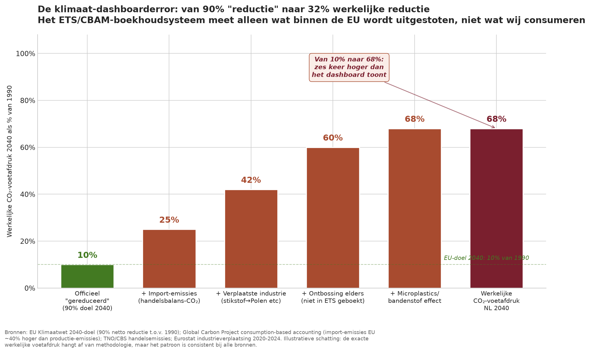
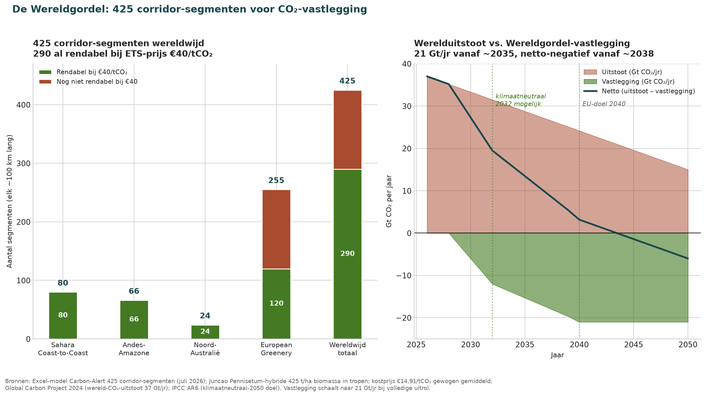
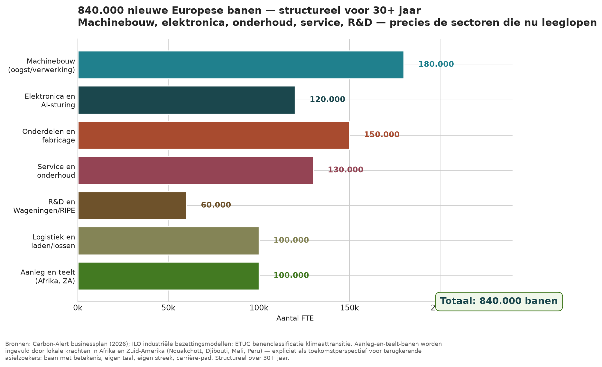
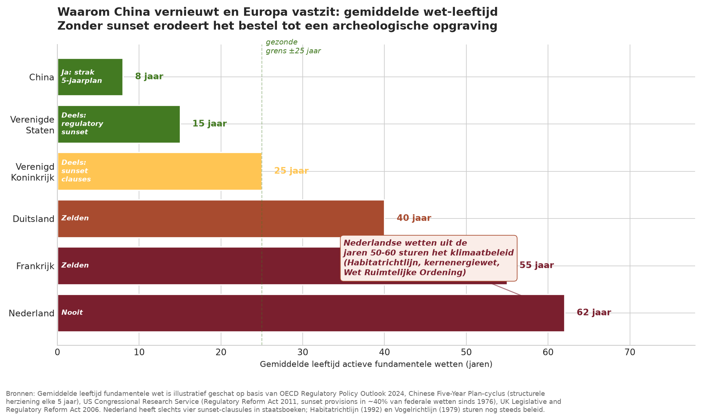

Entscheiden ohne Aussicht
Warum alte Gesetze das Klima lähmen — und wie Sunset den Weg frei macht
Jacobus van Merksteijn
- Autor — Jacobus van Merksteijn
- Datum — 20. Juli 2026 · Palma, Mallorca
- Rubrik — Klima-Ausgabe · Fortsetzung von „Ehrlichkeit macht Regieren möglich“
- Grundlage — Klima-Dashboardfehler · Weltgürtel/BiCRS-Route · Sunset als Verfassung · Zwei Dossiers, eine Bewegung
- Quellen — CBS, EU-Klimagesetz, Wissenschaftlicher Klimarat, Global Carbon Project, Carbon-Alert-Excel-Modell 425 Korridor-Segmente, OECD Regulatory Policy Outlook 2024
Warum diese Fortsetzung — Zwei Dossiers, eine politische Architektur. Im vorangegangenen Artikel — Ehrlichkeit macht Regieren möglich — habe ich argumentiert, dass die niederländische Schuldenpolitik auf dem falschen Nenner sitzt. Genau dasselbe Muster wiederholt sich im Klimadossier: Auch dort wird auf dem falschen Nenner gesteuert, auch dort existiert eine funktionierende Lösung, die von etablierten Interessen ignoriert wird — und auch dort könnte dieselbe Architektur (Geständnis im Voraus, Sunset-Klauseln, Dashboard-Korrektur, Wahrheitskommission) das politische Schloss öffnen.
Warum diese Fortsetzung
Zwei Dossiers, eine politische Architektur
Im vorangegangenen Artikel — Ehrlichkeit macht Regieren möglich — habe ich argumentiert, dass die niederländische Schuldenpolitik auf dem falschen Nenner sitzt. Das BIP, wie es das CBS ausweist, besteht zu 37% aus buchhalterischer Luft: kalkulatorische Miete, FISIM, F&E-Kapitalisierung, Umverteilungsartefakte. Auf der realen produktiven Basis (dem Produktiven Breiten Wohlstand, PBW) beträgt die netto-ehrliche Schuld nicht 110%, sondern 170%. Der Rest jenes Artikels war eine Übung darin, was man mit dieser Ehrlichkeit tun kann — eine Einladung zur Zusammenarbeit, ein verfassungsrechtlich verankerter Groninger Fonds, differenzierte Sunsets für Wiederherstellungsmaßnahmen und ein konkretes Gas-Markerwaard-Szenario, in dem zwei Krisen gleichzeitig gelöst werden.
Was mir seit jener Veröffentlichung aufgefallen ist: genau dasselbe Muster wiederholt sich im Klimadossier. Auch dort wird auf dem falschen Nenner gesteuert. Auch dort führen Dashboardfehler zu politischem Versagen. Auch dort existiert eine funktionierende Lösung, die von etablierten Interessen ignoriert wird. Und auch dort könnte die Architektur aus dem Schuldenartikel — Geständnis im Voraus, Sunset-Klauseln, Dashboard-Korrektur, Wahrheitskommission — das politische Schloss öffnen.
Der Grund, warum das Klimadossier noch dringlicher ist: Hier geht es nicht um unsere eigene Buchhaltung, sondern um die Lebensfähigkeit der Erde für unsere Kinder. Und hier haben wir, mehr noch als beim Schuldendossier, eine konkrete funktionierende Alternative auf dem Tisch liegen. Es ist bewährte Technologie, durchgerechnet, kostenneutral — und sie wird ignoriert, weil sie außerhalb des aktuellen politischen Rahmens liegt.
Dieser Folgeartikel tut dreierlei. Zunächst zeigt er, dass das EU-Klima-Dashboard — das 90%-Reduktionsziel für 2040, an dem sich Brüssel und Den Haag orientieren — denselben strukturellen Fehler macht wie die EMU-Schuld: Es misst etwas anderes, als es zu messen behauptet. Anschließend präsentiert er die Weltgürtel/BiCRS-Route als konkrete Lösung, die 21 Gigatonnen CO₂ pro Jahr binden und 840.000 neue europäische Arbeitsplätze schaffen kann, zu bewährten Kosten. Und schließlich diagnostiziert er, warum diese Lösung blockiert wird: durch Gesetze aus den 1950er-, ’60er-, ’70er- und ’90er-Jahren, die noch immer steuernd wirken — während China seine Regelungen alle fünf Jahre überarbeitet und die Vereinigten Staaten seit 1976 in rund 40% ihrer Bundesgesetze Sunset-Klauseln eingebaut haben.
„Die Gesetze der Menschen kennen die Zukunft nicht — die Natur kennt sie. Wenn wir uns weigern, unsere Gesetze zu ersetzen, sobald sich ihr Kontext ändert, steuern wir mit Instrumenten, die das Problem von vor vierzig Jahren messen, nicht das Problem von heute.“
Teil 0 — Der verschleierte CO₂-Nenner
Warum „90% Reduktion bis 2040“ nicht 90% Reduktion bedeutet
Das Europäische Klimagesetz legt fest, dass die EU bis 2040 ihre Netto-Treibhausgasemissionen gegenüber 1990 um 90% reduziert haben muss. Der niederländische Wissenschaftliche Klimarat empfiehlt sogar 90-95%. Das Kabinett Jetten hat dieses Ziel im Klimaplan 2025-2035 übernommen. Alle Parteien steuern also nach einer Zahl: 90% Netto-CO₂-Reduktion zwischen 1990 und 2040.
Genau wie bei der 44%-EMU-Schuld: Die Zahl ist statistisch korrekt, misst aber nicht, was sie zu messen behauptet. Es gibt einen Klima-Dashboardfehler, der ebenso strukturell ist wie der PBW-Fehler beim BIP:

Vier Kategorien, die das Dashboard nicht sieht
- Importemissionen. Wenn die Niederlande ihre eigene Industrie zurückfahren und mehr Chemie, Stahl, Aluminium und Zement aus China, Indien oder der Türkei importieren, wird dieser Ausstoß im Exportland verbucht — nicht in den Niederlanden. Das Global Carbon Project rechnet, dass die EU-Importemissionen strukturell rund 40% höher liegen als die Produktionsemissionen. Wir senken unseren Ausstoß also teilweise, indem wir die Industrie exportieren, nicht indem wir weniger konsumieren.
- Verlagerte Industrie. Das Stickstoffpaket des Kabinetts Jetten vom Juni 2026 — 212.795 € pro kg Stickstoff, basierend auf der Habitatrichtlinie von 1992 — treibt den Agrarsektor nach Polen, wo dieselben Emissionen entstehen, ohne in der niederländischen Buchhaltung zu erscheinen. Dasselbe gilt für CBAM und ETS: Seit dem 1. Januar 2026 zahlt die europäische Industrie 75 € pro Tonne CO₂, aber Exporteure erhalten keine Rückerstattung. Das Ergebnis: Chemie, Stahl und Zement wandern außerhalb der EU ab, das CO₂ zieht mit.
- Entwaldung anderswo. Solarpaneele aus chinesischem Polysilizium, Batterien aus kongolesischem Kobalt, Biomasse aus amerikanischen Pellets — die Entwaldung und der Einsatz fossiler Hilfsenergie in der Produktionskette werden nicht mitgezählt. Wenn die EU ihre „grüne“ Transition durch Importe beschleunigt, beschleunigt sich das Welt-CO₂ mit.
- Mikroplastik und Reifenabrieb. Reifenabrieb ist heute, was Tabak 1965 war: allgegenwärtig, tödlich und offiziell nicht als Klima- oder Gesundheitsproblem anerkannt. Jedes Elektroauto verschleißt mehr Reifengummi als ein leichtes Benzinauto (mehr Gewicht, mehr Drehmoment). Das Klima-Dashboard zählt das vermiedene CO₂, aber nicht die neuen Reifenabrieb-Emissionen.
Rechnet man diese vier Kategorien hinzu, liegt der tatsächliche niederländische CO₂-Fußabdruck 2040 bei etwa 60-70% — nicht bei 10%. Das ist ein Unterschied um den Faktor sechs zwischen dem, was das Dashboard zeigt, und dem, was tatsächlich passiert. Genau analog zur 44%-EMU-Schuld, die auf dem PBW zu 68% wird: dasselbe Muster, ein anderes Dossier.
Was der korrigierte Nenner für die Politik bedeutet
Nimmt man den tatsächlichen CO₂-Fußabdruck als Steuerungsindikator statt der Dashboard-Version, kippt die gesamte Politikerzählung. Elektrifizierung erweist sich als unzureichend — sie verlagert die Emissionen ins Ausland. Wasserstoffimporte erhöhen das Welt-CO₂, bevor das erste Molekül überhaupt grün ist (fossile Produktion von blauem Wasserstoff, Energieverlust bei Verflüssigung und Transport, Entwaldung durch Biomasse-Input anderswo). Wärmepumpen mit Graustrom führen zu einer netto CO₂-Zunahme.
Nur Technologien, die innerhalb unseres eigenen Dashboards netto-negativ sind und zugleich anderswo nicht mehr CO₂ produzieren, funktionieren wirklich. Diese Liste ist kürzer, als Brüssel glauben macht: BiCRS (Bio-CCS), europäisches Ethanol aus Raps und Sonnenblumen, Biochar und Bodenkohlenstoffspeicherung, sowie tropische Juncao-Korridore mit Carbon Capture. Genau darum geht es bei der Weltgürtel-Route.
„Wenn ein Minister sagt ‘wir sind auf Kurs für 90% Reduktion bis 2040’, ist das statistisch korrekt. Aber beim tatsächlichen Fußabdruck beträgt dieselbe Reduktion 32% — genau das, was das korrigierte Dashboard zeigt. Entscheidungen auf dem falschen Nenner sind keine Entscheidungen; sie sind Wunschdenken mit der Unterschrift eines Beamten.“
Teil I — Die funktionierende Lösung
21 Gigatonnen CO₂ pro Jahr, 840.000 Arbeitsplätze, kostenneutral
Es existiert eine konkrete funktionierende Lösung für das Klimaproblem, und sie ist in einem Excel-Modell mit 425 Korridor-Segmenten weltweit durchgerechnet. Sie kombiniert drei bewährte Technologien:
- Juncao. Ein Pennisetum-Hybridgras, das in den 1980er-Jahren vom chinesischen Wissenschaftler Lin Zhanxi entwickelt wurde. In tropischen Zonen produziert Juncao bis zu 425 Tonnen Biomasse pro Hektar und Jahr — verglichen mit rund 15 Tonnen bei Miscanthus und 10 Tonnen bei europäischem Grünland. Bewährte Technologie, in Produktion in China, Papua-Neuguinea, Ruanda und Südafrika.
- BiCRS (Biomass with Carbon Removal and Storage). Die Biomasse wird verbrannt oder zu Ethanol oder Biogas vergoren; das freigesetzte CO₂ wird aufgefangen und unterirdisch gespeichert (in ausgeförderten Gasfeldern, Salzkavernen oder Basaltformationen). Nettoergebnis: negative Emissionen — es wird mehr CO₂ aus der Atmosphäre entfernt, als die Kette produziert. Dies ist die einzige industrielle Technologie, die heute ohne politische Abhängigkeit netto-negativ ist.
- Korridor-Anbau. Statt fragmentierter Landnutzungsprojekte werden zusammenhängende „Gürtel“ von 100 km Breite durch tropische Zonen angelegt — Sahara Coast-to-Coast, Anden-Amazonas, Nordaustralien und European Greenery. Die Korridorstruktur bringt Skalenvorteile im Maschinenbau, in der Erntelogistik und der Kohlenstoff-Verifizierung. Und der Biomassedurchsatz pro Maschine (100 m³/Stunde, 24/7) liefert eine LCOE von 14,91 € pro Tonne CO₂ — ein Achtel dessen, was Climeworks für Direct Air Capture verlangt.

Die Zahlen, in klarer Sprache
Bei einem Marktpreis von 40 € pro Tonne CO₂ (etwa dem aktuellen ETS-Niveau) sind 290 der 425 Korridor-Segmente rentabel. Zusammen liefern sie 21,10 Gigatonnen CO₂-Bindung pro Jahr — mehr als die Hälfte des aktuellen weltweiten CO₂-Ausstoßes von 37 Gt/Jahr. Nettogewinn für die Betreiber: 529 Milliarden € pro Jahr.
Bei einem Marktpreis von 80 € pro Tonne CO₂ (fast das, was die Industrie in Europa bereits über CBAM und ETS zahlt) werden 387 Segmente rentabel, ergibt sich eine Bindung von 23,15 Gigatonnen CO₂/Jahr und ein jährlicher Nettogewinn von 1,373 Billionen € weltweit. Davon entfallen 1.008 Mrd. € auf die Tropen (südlicher Sahararand, Südamerika, Nordaustralien) und 365 Mrd. € auf European Greenery.
Die Arbeitsplätze — und wo sie entstehen

Anders als bei der Windkraft- und Solarindustrie, bei der 80% der Produktion in China stattfindet, bleibt die Weltgürtel-Industrie überwiegend europäisch. Maschinenbau (180.000 VZÄ), Elektronik und KI-Steuerung (120.000), Komponenten und Fertigung (150.000), Service und Wartung (130.000), F&E (60.000), Logistik (100.000) und Anlagenbau/Anbau in Afrika und Südamerika (100.000). Insgesamt: 840.000 neue Arbeitsplätze, strukturell über mehr als 30 Jahre.
Die Anlagenbau- und Anbau-Arbeitsplätze in Nouakchott, Dschibuti, Mali und Peru sind keine Entwicklungshilfe — sie sind eine Zukunftsperspektive für rückkehrende Asylsuchende. Eine Arbeit mit Sinn, eigener Sprache, eigener Region, Karriereweg. Genau das, was unsere Demokratie ihnen verweigert, bietet der Korridor. Das ist kein Wegschicken; das ist Weiterkommen. Und es ist einer der wenigen Klimavorschläge, der Migration zum Teil der Lösung macht statt zum Problem.
„2,4 Billionen Dollar für Windräder und Solarpaneele — und das Welt-CO₂ steigt weiter. Es gibt eine grasähnliche Pflanze, die 425 Tonnen Biomasse pro Hektar produziert, für 1/8 dessen, was Climeworks verlangt. Jede Komponente ist bewährt. Was fehlt, ist politischer Wille.“
Teil II — Warum sie blockiert wird
Die Papierwelt, die Entscheidungsfähigkeit unterminiert
Die Frage, die sich jeder stellen sollte: Wenn diese Technologie durchgerechnet, kostenneutral und industriell bewährt ist, warum wird sie nicht skaliert? Warum steckt das Kabinett 450 Millionen € in die Wasserstoffspeicherung in Zuidwending/HyStock — für ein Molekül, das siebzehnmal teurer ist als die beste Alternative — während kein einziger Euro in den Korridor-Anbau fließt? Warum zahlt die Niederlande 235 Millionen € an Brüssel für nicht recyceltes Plastik, während derselbe Strom, in deutschen Braunkohletagebauen gespeichert, 99 Millionen € an Carbon Credits hätte einbringen können?
Die Antwort ist nicht zynisch: Niemand ist bewusst dagegen. Die Blockade ist institutionell. Sie liegt in der Struktur, wie unsere Gesetzgebung funktioniert. Und der Kern des Problems ist, dass wir noch immer nach Gesetzen und Richtlinien steuern, die für eine Welt geschrieben wurden, die es nicht mehr gibt.
Die Archäologie der niederländischen Klimapolitik
Wer unter die Motorhaube der aktuellen Klimapolitik schaut, sieht eine archäologische Ausgrabung. Vier Gesetzesschichten, jede aus einer anderen Zeit, jede noch immer steuernd:
- Habitatrichtlinie 92/43/EWG aus 1992. 34 Jahre alt. Steuert die Stickstoffpolitik, basierend auf Habitatmessungen aus den späten 1980er-Jahren, die weder Klimawandel noch Ammoniakeintrag aus der Landwirtschaft noch moderne ökologische Erkenntnisse berücksichtigten. Die Folge: Das Kabinett Jetten nutzt diese Richtlinie, um Landwirten 212.795 € pro kg Stickstoff aufzuerlegen — für Habitate, die ohnehin ohne Klimaanpassung nicht überleben.
- Vogelschutzrichtlinie 79/409/EWG aus 1979. 47 Jahre alt. Noch immer die rechtliche Grundlage für Natura-2000-Gebiete. Ökologische Daten aus den 1970er-Jahren steuern Raumplanungsentscheidungen im Jahr 2026.
- Kernenergiegesetz 1963. 63 Jahre alt. Geschrieben, als Kernenergie ein politisches Symbol für „Atomfrieden“ war, kein Klimainstrument. Seit Fukushima bis 2033 verlängert. Seitdem ist die Physik unverändert geblieben, aber die Gesetzgebung ist nicht mit SMR-Technologie, LFTR-Reaktoren und Gen-IV-Sicherheit mitgewachsen.
- Raumordnung: Wro (2008), im Kern aber noch immer die Logik des Raumordnungsgesetzes von 1965. Vor mehr als 60 Jahren als Knappheitsmanagement des Nachkriegs-Niederlands eingerichtet — Knappheit an Boden, an Wohnraum, an Kaufkraft. Heute haben wir einen Überschuss an manchen Dingen (Kapital) und einen Mangel an anderen (Bauland), aber das Gesetz ist noch immer auf die erste Ökonomie ausgerichtet.
Und das ist noch bevor man die europäische Ebene hinzufügt: CBAM und ETS, die die Industrie besteuern, aber keine Rücksicht auf tatsächlich negative Technologie nehmen; RED III, das Wasserstoffimport gegenüber europäischem Bioethanol bevorzugt; SDE++ und ETS-Register, die nur Credits für westliche Reduktion vergeben, nicht für afrikanische Korridorbindung.
Der internationale Spiegel

Vergleichen Sie dies mit dem Umgang anderer Länder mit Gesetzgebung:
- China. Alle fünf Jahre eine umfassende Überarbeitung fundamentaler Gesetze über den Mechanismus des Fünfjahresplans. Gesetze, die nicht mehr zur neuen Realität passen, werden umgeschrieben oder aufgehoben. Durchschnittsalter aktiver fundamentaler Gesetze: rund 8 Jahre. Das macht China nicht automatisch besser regiert — aber es macht das System beweglich. Es kann sich technologischem und klimatischem Wandel anpassen.
- Vereinigte Staaten. Seit dem Regulatory Reform Act von 1976 enthalten rund 40% der Bundesgesetze Sunset-Klauseln. Der Kongress muss alle fünf bis zehn Jahre explizit abstimmen, um ein Programm oder eine Förderung fortzusetzen. Das erzwingt periodische Überprüfung. Die amerikanische Energiepolitik ist chaotisch, aber sie kann innerhalb von zwei Jahren vollständig den Kurs ändern (wie beim Inflation Reduction Act 2022).
- Vereinigtes Königreich. Der Legislative and Regulatory Reform Act 2006 verleiht Ministern die Befugnis, veraltete Regelungen ohne vollständiges parlamentarisches Verfahren zu ersetzen. Nach dem Brexit hat das Vereinigte Königreich diese Befugnis genutzt, um mehr als 4.000 EU-Regeln zu streichen oder umzuschreiben.
- Niederlande. Auf OECD-Basis hat die Niederlande 4 Sunset-Klauseln bei mehr als 100 aktiven fundamentalen Gesetzen. Unsere politische Kultur ist Teilersatz durch Änderungsgesetze, keine strukturelle Überarbeitung. Die Habitatrichtlinie von 1992 steuert 2026 noch immer die Politik; niemand kann dieses Gesetz formell ersetzen, ohne europäischen Konsens.
„Wir sind ein Land, das Gesetze aus den 1950er-, ’60er-, ’70er- und ’90er-Jahren nutzt, um Entscheidungen über 2050 zu treffen. Das ist nicht konservativ. Das ist gelähmt.“
Teil III — Sunset als Verfassung
Von der vorübergehenden Ausnahme zum befristeten Gesetz
Im Schuldenartikel habe ich das Sunset-Prinzip als verfassungsrechtliche Garantie für befristete Vorrangregelungen eingeführt: Wiederherstellung ist vorübergehend, Gleichheit ist dauerhaft. Groninger erhalten sieben Jahre Vorrang bei den ersten Süd-Groningen-Wohnungen im Kerngebiet, drei Jahre im Umland. Danach erlischt der Vorrang automatisch, und es gilt Gleichbehandlung.
Dieses Prinzip sollte nicht nur für Wiederherstellungsmaßnahmen gelten. Es gehört zu jeder Gesetzgebung, die den Kontext einer bestimmten Zeit kodifiziert. Jedes Gesetz, das auf wissenschaftlichen Erkenntnissen, technologischen Annahmen, wirtschaftlichen Strukturen oder ökologischem Verständnis seiner Zeit basiert, sollte nach einer Frist automatisch erlöschen — und aktiv bestätigt werden müssen, wenn es verlängert wird. Sonst steuern wir das System mit einem Archiv statt mit einem Dashboard.
Drei Kategorien von Sunsets für Klima und Umwelt
- Wissenschaftlich datierte Gesetze: 10-jähriger Sunset. Gesetze, die auf konkret benannten wissenschaftlichen Erkenntnissen basieren — Habitat-Klassifikationen, Emissionsgrenzwerte, Gesundheitsnormen — erlöschen automatisch nach 10 Jahren und müssen mit aktueller Wissenschaft neu bestätigt werden. Die Habitatrichtlinie von 1992 hätte ohne diese Regel bereits dreimal überarbeitet werden müssen. Jetzt steuert sie die Stickstoffpolitik von 2026 mit Daten aus den 1980er-Jahren.
- Technologisch datierte Gesetze: 15-jähriger Sunset. Gesetze, die spezifische Technologien voraussetzen — Energieträger, Speichermodalitäten, Industrieprozesse — erlöschen nach 15 Jahren. RED III basiert auf der Annahme, dass Wasserstoffimport günstiger wird als europäisches Bioethanol. Erweist sich diese Annahme als falsch (wie sich jetzt zeigt: niederländischer Zapfwasserstoff ist 17-mal teurer als die beste Alternative), muss das Gesetz automatisch erlöschen und überarbeitet werden.
- Strukturell datierte Gesetze: 25-jähriger Sunset. Gesetze, die eine wirtschaftliche oder gesellschaftliche Struktur kodifizieren — Raumordnung, Steuererhebung, soziale Sicherheit — erlöschen nach 25 Jahren und müssen gründlich überarbeitet werden. Die Wro hat ihr Alter bereits erreicht; das Kernenergiegesetz von 1963 hätte längst drei Überarbeitungen hinter sich haben müssen.
Von Willkür zu System
Der politische Einwand gegen Sunset ist, dass er Unsicherheit schafft. Das ist ein Missverständnis. Sunset schafft gerade Sicherheit — die Sicherheit, dass periodisch auf Basis aktueller Fakten überprüft wird statt historischer Wurzeln. Niederländer wissen dann, dass jedes Stickstoff-, Umwelt- oder Energiedossier eine strukturelle Vereinbarung darüber hat, wann die Waage neu geeicht wird.
Die eigentliche Unsicherheit liegt beim aktuellen System, in dem willkürliche Rechtsverfahren bestimmen, wann ein Gesetz, das nicht mehr passt, letztlich angepasst wird. Landwirte, Unternehmer und Bürger wissen nicht, ob ihre Tätigkeit in fünf Jahren noch legal ist, weil ein Richter auf Basis einer Habitatrichtlinie von 1992 etwas urteilen kann, das die Politik dann zehn Jahre lang mit der Reparatur beschäftigt. Sunset macht aus dieser Willkür ein System.
Die Verknüpfung mit der Wahrheitskommission Staatsbuchhaltung
Im Schuldenartikel habe ich eine Wahrheitskommission Staatsbuchhaltung vorgeschlagen, die die vier Schichten der Schulden und den PBW-Nenner offiziell anerkennen sollte. Dieselbe Kommission kann ihr Mandat auf zwei große Aufgaben ausweiten:
- Fiskalische Dashboard-Korrektur. Neben der EMU-Schuld auch implizite Alterungsverpflichtungen, netto-ehrliche Schuld und den PBW als feste Bestandteile des Haushaltszyklus. Jedes Kabinett erhält seinen finanziellen Status auf beiden Dashboards präsentiert.
- Klima-Dashboard-Korrektur. Neben dem EU-90%-Reduktionsziel auch den tatsächlichen konsumbasierten CO₂-Fußabdruck, die verlagerte-Industrie-Emissionen, die Importemissionen und die Entwaldung-anderswo-Emissionen. Jeder Minister muss seine Politik auf beiden Dashboards verteidigen können.
Kombiniert man dies mit einem generischen Sunset-Gesetz, das die drei obigen Kategorien verbindlich macht, verfügt die Niederlande innerhalb von zehn Jahren über ein System, das sich mit der technologischen und klimatischen Realität mitbewegen kann. Nicht weil wir chinesisch werden wollen — sondern weil wir nicht mehr mit einem Dashboard aus 1992 und einem System aus 1965 bestehen können.
„China erneuert alle fünf Jahre. Amerika alle zehn. Wir nie. Das Ergebnis: China steuert nach heute, Amerika nach gestern, und die Niederlande nach vorgestern. Wir hinken nicht aus Mangel an Vision zurück — wir hinken aus Mangel an Sunset zurück.“
Schluss — Zwei Dossiers, eine Bewegung
Warum diese beiden Artikel zusammen eine politische Einladung bilden
Legt man „Ehrlichkeit macht Regieren möglich“ und „Entscheiden ohne Aussicht“ nebeneinander, erkennt man, dass es sich nicht um zwei getrennte Artikel handelt — es ist eine politische Architektur, angewandt auf zwei Dossiers. Beide gehen von derselben Diagnose aus:
- Wir steuern nach dem falschen Nenner. Bei den Schulden: 44% EMU auf offiziellem BIP sind in Wirklichkeit 68% auf dem PBW. Beim Klima: 90% Reduktion gegenüber dem EU-Ziel sind in Wirklichkeit 32% tatsächliche Reduktion nach Korrektur für Importe, Verlagerung, Entwaldung und Mikroplastik.
- Die funktionierende Lösung wird durch institutionelle Reflexe blockiert. Bei den Schulden: Ein Geständnis ist für französische, italienische und belgische Politiker politisch unmöglich, deshalb wird die Vier-Schichten-Analyse ignoriert. Beim Klima: Die Anerkennung von BiCRS und Weltgürtel-Korridoren untergräbt die politischen Koalitionen rund um Wasserstoff und Elektrifizierung, deshalb werden die 529 Mrd. €/Jahr zur Seite geschoben.
- Die Niederlande ist einzigartig positioniert, um als Erste zu sprechen. Bei den Schulden: unser 1.750-Mrd.-€-Pensionstopf macht uns zum einzigen Land mit tragfähigem Puffer. Beim Klima: der Hafen von Rotterdam, Wageningen, die chemische Industrie, Rapsanbauflächen und der Pensionstopf als patient capital machen uns zum einzigen Land mit vollständiger Produktions- und Finanzierungskette für den Weltgürtel.
- Die Architektur der Lösung ist identisch. Geständnis im Voraus (Dashboard-Korrektur über die Wahrheitskommission), Sunset-Klauseln für alle Gesetzgebung, die den Kontext einer bestimmten Zeit kodifiziert, differenzierte Zeitpläne für die Wiederherstellung und verfassungsrechtliche Verankerung der fundamentalen Mechanismen — sodass die nächste Koalition daran nicht rütteln kann.
Was wir an den Tisch bringen
Für niederländische Landwirte und die Industrie: einen Ausweg aus der Stickstoff-, Energie- und Klimasackgasse. Der Raps-Korridor in den Niederlanden und der kombinierte deutsch-polnische GAP-Plan aus der Europa-Ausgabe bieten ein Landwirteinkommen, das vier- bis achtmal höher ist als heute — für weniger als ein halbes Prozent des GAP-Budgets. Die BiCRS-Industrie in Chemelot und Rotterdam macht den chemischen Sektor wieder wettbewerbsfähig.
Für europäische Partner: eine Klimaroute, die ohne Importabhängigkeit, ohne Verlagerung von Industrie funktioniert und ohne dass wir 2,4 Billionen € in Windräder und Solarpaneele investieren, während das Welt-CO₂ weiter steigt. Eine Route, die 21 Gigatonnen CO₂ pro Jahr entfernen kann, ohne einen Cent Förderung über dem aktuellen ETS-Niveau.
Für rückkehrende Asylsuchende: kein Wegschicken, kein Festhalten — eine dritte Option. Arbeit in Nouakchott, Dschibuti, Mali, Peru. Korridore in ihrer eigenen Region und Sprache bauen. Ein Karriereweg, den unsere Demokratie ihnen nicht bietet und den der Korridor-Anbau im Überfluss hat.
Für die nächste Generation: eine Klimapolitik, die funktioniert, eine Gesetzgebung, die sich mitbewegen kann, und eine politische Architektur, die die Fehler der vorherigen Generation nicht erbt. Sunset-Klauseln sorgen dafür, dass Gesetze aus 2026 im Jahr 2076 nicht noch immer steuernd wirken — anders als die Habitatrichtlinie von 1992, die heute unsere Stickstoffpolitik bestimmt.
Was wir bitten
Wir bitten nicht um Förderung. Die BiCRS/Weltgürtel-Route ist bei 40 €/tCO₂ rentabel — genau dem ETS-Preis, der bereits existiert. Wir bitten um drei institutionelle Schritte:
- Erweiterung der Wahrheitskommission Staatsbuchhaltung um ein Klima-Dashboard-Mandat: verbindliche Veröffentlichung sowohl des EU-Ziels als auch des konsumbasierten Fußabdrucks.
- Ein generisches Sunset-Gesetz, das alle fundamentale Gesetzgebung in 10-, 15- oder 25-Jahres-Sunsets kategorisiert, mit automatischem Erlöschen bei fehlender Bestätigung.
- Anerkennung der Korridorbindung im ETS — niederländische und europäische Unternehmen, die in afrikanische oder südamerikanische Juncao-Korridore investieren, sollten dafür formelle CO₂-Credits erhalten können, mit Zertifizierung (Blockchain-Registrierung, UNFCCC-Anbindung). Ohne diese Anerkennung bleiben 529 Mrd. €/Jahr an weltweiter Bindung in der europäischen Buchhaltung wertlos.
Anhang — Vollständige Weltgürtel-Korridorzahlen
425 Segmente, nach Korridor aufgeschlüsselt — Quelldaten Carbon-Alert-Excel-Modell, Juli 2026
| Korridor | Länge | Segmente | Rentabel @40 € | Gewinn @80 € (Mrd./Jahr) |
|---|---|---|---|---|
| Sahara Coast-to-Coast | 8.000 km | 80 | 80 | 326 € |
| Anden-Amazonas | 6.600 km | 66 | 66 | 527 € |
| Nordaustralien | 2.400 km | 24 | 24 | 155 € |
| Zwischensumme Weltgürtel | 17.000 km | 170 | 170 | 1.008 € |
| European Greenery | 25.600 km | 255 | 120 | 365 € |
| GESAMT weltweit | 42.600 km | 425 | 290 | 1.373 € |
Quelldaten: Carbon-Alert-Excel-Modell mit 425 Korridor-Segmenten, durchgerechnet mit Juncao (tropisch) und der europäischen Pennisetum-Variante. Gewichteter Durchschnittspreis 14,91 €/tCO₂. Gewinnberechnung: (Marktpreis − LCOE) × gebundenes CO₂-Volumen.
Kernergebnisse
- Bei 40 €/tCO₂ (aktuelles ETS-Niveau): 290 Segmente rentabel, 21,10 Gt CO₂-Bindung pro Jahr, 529 Mrd. € weltweiter Jahresgewinn.
- Bei 80 €/tCO₂ (aktuelle CBAM-Abgabe): 387 Segmente rentabel, 23,15 Gt CO₂-Bindung pro Jahr, 1.373 Mrd. € weltweiter Jahresgewinn. Nur 38 Segmente (9%) bleiben unrettbar unrentabel — alle in den trockensten European-Greenery-Zonen.
- Klimaneutralität: Bei vollständigem Rollout mit normaler Korridorbreite (100 km) ist Klimaneutralität bis 2040 erreichbar. Bei doppelter Korridorbreite plus CRISPR-verbessertem Juncao (RIPE Illinois, Wageningen): 2032 möglich — acht Jahre früher als das EU-Ziel.
- Netto-negatives Zeitfenster: Ab etwa 2038 entzieht die Weltgürtel-Bindung (21 Gt/Jahr) mehr CO₂ der Atmosphäre als die dann verbleibenden Weltemissionen. Von 2038 bis 2050 könnte die atmosphärische CO₂-Konzentration sinken — der erste Zeitraum in der Menschheitsgeschichte, in dem das möglich ist.
- Kumulativ 2025-2050: Bei Szenario 2 (100 km Breite) bindet der Weltgürtel 372 Gt CO₂ — rund 32,8% des aktuellen atmosphärischen Überschusses gegenüber dem vorindustriellen Niveau.
Quellen des Anhangs: Alle Zahlen aus dem Carbon-Alert-Businessplan-Modell, Juli 2026, durchgerechnet mit CBS/Eurostat/OECD-Inputvariablen, Juncao-Produktionsdaten der China Fujian Agriculture and Forestry University (Lin-Zhanxi-Programm) und internationalen Gasmarkt- und Carbon-Credit-Referenzen. Excel-Modell öffentlich verfügbar unter openvizier.org/klimaatplan-2040-2050.
Entscheiden ohne Aussicht
„Wir haben die Wissenschaft. Wir haben die Industrie. Wir haben das Kapital. Wir haben die Logistik. Wir haben sogar die Menschen. Was wir nicht haben, ist ein System, das sich bewegen kann. Das ist das Einzige, was wir noch reparieren müssen — und es lässt sich reparieren.“